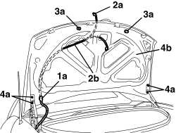

7205E54 STRIPPING BOOT
- Path
- Procedures > 72 PANELS AND FRAMES > 7205 STRIPPING FOR REPLACEMENT INTERVENTIONS > 7205E EXTERIOR PARTS > 7205E54 STRIPPING BOOT
- Kind
- repair procedure (removal / refitting; the operation number is the code)
- Applies to
- engines: 2.2 JTS, 3.2 JTS; all production periods
- Interactive page
- https://sloeber94.github.io/elrnDB-aBrrSpdr/en/#/946004203
Applies to: engines: 2.2 JTS, 3.2 JTS; all production periods
 Removing
Removing
 Refitting
RefittingOp. 5550D16 THIRD BRAKE LIGHT - R+R
Op. 7025B18 BOOT LID LINING - R+R
Op. 7025B38 BOOT LID LOCK - R+R
Op. 7025B12 BOOT LID BUFFERS/MOUNTINGS - R.R. AND ADJUST
Op. 7055A81 BADGE ON BOOT LID - R R
1. Disconnect the cable duct (1a) through the boot lid.
2. Fit a sensor to the end (2a) of the wiring (2b) for the boot lid, then extract the actual wiring leaving the sensor in its place (to be used for reinserting the wiring when refitting).
3. Remove the buffers (3a) releasing them from the housing.
4. If necessary, undo the bolts (4a) and remove the boot lid (4b).

Applies to: engines: 2.2 JTS, 3.2 JTS; all production periods
Refitting
Removing- Check that the boot lid is not damaged.
- If removed, position the boot lid and screw in the bolts without tightening them (for the subsequent alignment).
- Position the buffers and attach them in place.
- Fit the wiring using the sensor, then remove the sensor.
- Connect the cable duct to the opening in the boot lid.
Op. 7055A81 BADGE ON BOOT LID - R R
Op. 7025B12 BOOT LID BUFFERS/MOUNTINGS - R.R. AND ADJUST
Op. 7025B38 BOOT LID LOCK - R+R
Op. 7025B18 BOOT LID LINING - R+R
Topics linked from this page (6)
- 5550D16 THIRD BRAKE LIGHT - R+R
- 7025B10 BOOT LID - ALIGNMENT
- 7025B12 BOOT LID BUFFERS/MOUNTINGS - R.R. AND ADJUST
- 7025B18 BOOT LID LINING - R+R
- 7025B38 BOOT LID LOCK - R+R
- 7055A81 BADGE ON BOOT LID - R R